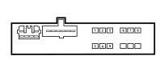

C020B PASSENGER SIDE DASHBOARD EARTH (DASHBOARD)
- Path
- Electrical equipment > 3 CONNECTORS > C EARTHS > C020 PASSENGER SIDE DASHBOARD EARTH > C020B PASSENGER SIDE DASHBOARD EARTH (DASHBOARD)
- Kind
- connector pinout (pin -> wire colour -> other end)
- Applies to
- all engines; all production periods
- Interactive page
- https://sloeber94.github.io/elrnDB-fPnd/en/#/169002981
Applies to: all engines; all production periods

Wiring | Colour |
|---|---|
NERO (black) |
Pin | Cable | Destination | |||
|---|---|---|---|---|---|
Sec.. | Colour | Node | Connect. | Pin | |
1 | 0,5 | LN (blue with black stripe) | 7 | ||
2 | 2,5 | N (black) | 8 | ||
3 | 0,5 | NZ (black with violet stripe) | 2 | ||
4 | 0,5 | NZ (black with violet stripe) | 6 | ||
5 | 0,35 | NS (black with pink stripe) | 3 | ||
6 | 0,35 | NZ (black with violet stripe) | 3 | ||
7 | 0,35 | NS (black with pink stripe) | 4 | ||
10 | 0,35 | NS (black with pink stripe) | 4 | ||
11 | 0,35 | NS (black with pink stripe) | 1 | ||
12 | 0,5 | NZ (black with violet stripe) | 2 | ||
Topics linked from this page (9)
- 20 FACIA
- D030A DRIVER'S FRONT DOOR COUPLING (DASHBOARD)
- D030B DRIVER'S FRONT DOOR COUPLING (DASHBOARD)
- D031A PASSENGER FRONT DOOR COUPLING (DASHBOARD)
- D110 CLOCK SPRING AND STEERING WHEEL CONTROLS COUPLING
- H042 DRIVER'S FRONT ELECTRIC WINDOW SWITCH
- H043 PASSENGER'S FRONT ELECTRIC WINDOW SWITCH
- M001L BODY COMPUTER (DASHBOARD)
- M094A RADIO RECEIVER NODE (DASHBOARD)